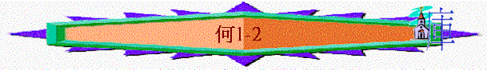

|
非人間的愛情－－怎能捨棄以色列 |
|||||||
|
怎能捨棄淫婦 |
怎能捨棄以色列 |
||||||
|
１－３ |
４－１４ |
||||||
|
去娶淫婦 |
追討淫行 |
再愛淫婦 |
以色列 的罪行 |
以色列 的被罰 |
耶和華 的無奈 |
耶和華 的審判 |
耶和華 的眷愛 |
引言---[......耶和華的話臨到備利的兒子何西阿](何1:1)
--神的話與何西阿書
--神的話與歷代皇朝
--神的話與何西阿
1.事奉的開始
2.事奉的方向
3.傳揚的中心
4.崇高的地方
Ｉ．怎能捨棄淫婦（１：２－３：５）
A.去娶淫婦
1.娶淫婦的表徵
a.主的命令
i.似乎不合常理
ii.非人喜悅
iii.總有美意
iv.人能完成
b.地的表徵
[這地大行淫亂,離棄耶和華]v.2
--淫亂與離棄神有關
c.人的順服v.4-9
2.生先女的警告
a.警告
i.第一個警告:[耶斯列]v.4
(1)神追討
(2)神分散
ii.第二個警告:[羅路哈瑪]v.6
(1)以色列不蒙憐恤
(2)猶太家卻得憐憫
iii.第三個警告:[羅阿米]
--非我民
b.反映
i.神的公義與寬容
ii.人的愚昧與硬心
3.稱兄妹的預言
a.預言
i.稱弟兄為[阿米]
--本來非我民--將來必是永生神的兒子
ii.稱姐妹為[路哈瑪]
--本來不蒙愛--卻蒙憐憫
--本來要滅絕--卻人數必如海沙,不可數
--本來分散 --卻一同聚集,為自己立一個首領
b.反映
i.神會懷怒--卻不永遠
ii.神會捨棄--卻不死心
iii.神會拆毀--但終施恩
B.追討淫行(2:2-23)
1.關係破裂v.2
a.原有的關係--夫妻
i.神的重視
ii.人的榮耀
iii.約的持守
b.現今的情況--破裂
i.[你們要與你們的母親...]
ii.[....大大爭辯....]
iii.[因為他不是我的妻子,我也不是他的丈夫....]
c.破裂的原因--淫亂
[叫他除掉臉上的淫像....]
2.追想淫行v.3-13
a.淫行
i.虛假的事奉v.11,13
ii.甘心的隨從
iii.樂意的獻上v.8
b.原因
i.忘記神v.13
ii.受吸引v.12
iii.錯想法
3.追討敗壞v.3-13
a.神的警告v.2-3
b.神的攔阻v.6-7
c.神的追討
i.收回神賜的豐盛v.8-9
ii.止息基本的歡樂v.11
iii.拆毀先前的光景v.12
4.應許復興v14-23
a.環境的操練
b.神言的勸慰
c.應許的盼望
d.偶像的除掉
e.新約的確立
f.再聘的慈憐
g.重新的栽種
h.關係的修好